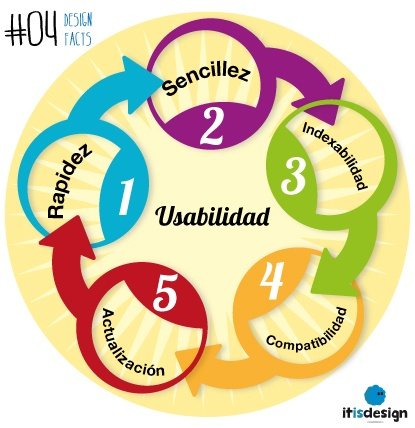

UCACUE
Plataforma Estudiantil.
Interacción Hombre aquina.
Listado de Temas de la Asignatura, Interación hombre maquina.
INTERFAZ DE USUARIO.

La interfaz de usuario es el medio con que el usuario puede comunicarse con una máquina, equipo, computadora o dispositivo, y comprende todos los puntos de contacto entre el usuario y el equipo.
USABILIDAD DEL SISTEMA.
La Usabilidad es la medida de la calidad de la experiencia que tiene un usuario cuando interactúa con un producto o sistema. Esto se mide a través del estudio de la relación que se produce entre las herramientas y quienes las utilizan, para determinar la eficiencia en el uso de los elementos ofrecidos y la efectividad en el cumplimiento de tareas.
DISEÑO WEB

El diseño web es una actividad que consiste en la planificación, diseño, implementación y mantenimiento de sitios web. No es simplemente la implementación del diseño convencional ya que se abarcan diferentes aspectos como el diseño gráfico web, diseño de interfaz y experiencia de usuario.
VIDEO SOBRE INTERFAZ DE USUARIO
En este video se propone un modelo simplificado de interfaz de usuario en las TIC y se aplica a diferentes casos de interacción persona-ordenador. A través de una breve historia de la accesibilidad de las interfaces de usuario se sugiere una reflexión sobre innovación, tecnología y accesibilidad.
VIDEO USABILIDAD DEL SISTEMA
En este video se explica de manera detallada lo que es usabilidad y usabilidad web, asi mismo se especifica los componentes del mismo, Facilidad de Aprendizaje, Eficiencia, Memorabilidad, Errores y Satisfacción.
VIDEO SOBRE DISEÑO WEB
En este video se puede observar como de una manera explicita se da a conocer todo lo relacionado con Diseño y Desarrollo web, asi como se da a conocer conecptos relacionados con el mismo, FrontEnd, BackEnd, Hosting, entre otros.

Últimas Notificaciones
Practica fin de ciclo:
PENDIENTE